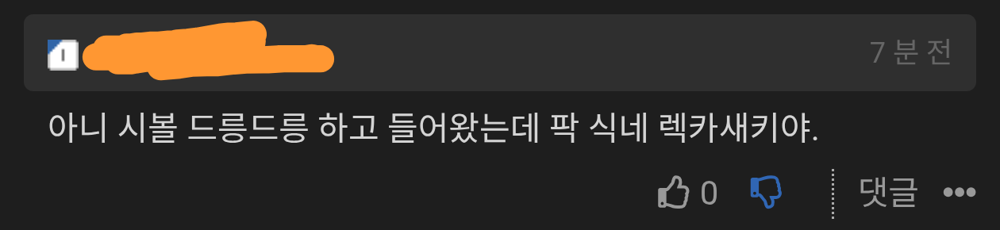

220 · 8 · 15 시간 전 · 원문

이제 남혐까지 자연스럽게 써버림 퓨ㅠㅠ
저게 뭔소리야? ㅠㅠ
수집 당시 댓글 8개
고추건조기 · 13 시간 전
일베, 페미 유민들 겁나 들어온 느낌이 남
나부 · 13 시간 전
페미련들 오조오억배 늘어난 느낌
rclone · 13 시간 전
연예인 누가 쓰는건 괜찮다며
딜도잘넣는사람 · 13 시간 전
보릉보릉
피망조아 · 12 시간 전
드릉드릉은 뭐
싱키 · 12 시간 전
여자다 으흐흐
웜뱃똥 · 8 시간 전
보지대장부 갓치들이 봊풍당당 행차하신다는데 어디서 한냄져 웅앵웅 소리가 파티션을 넘노 이기?
XiJinPink · 6 시간 전
와... ㅆㅂ 너 ㅈㄴ 잘한다 어디서 왔어?
일베, 페미 유민들 겁나 들어온 느낌이 남